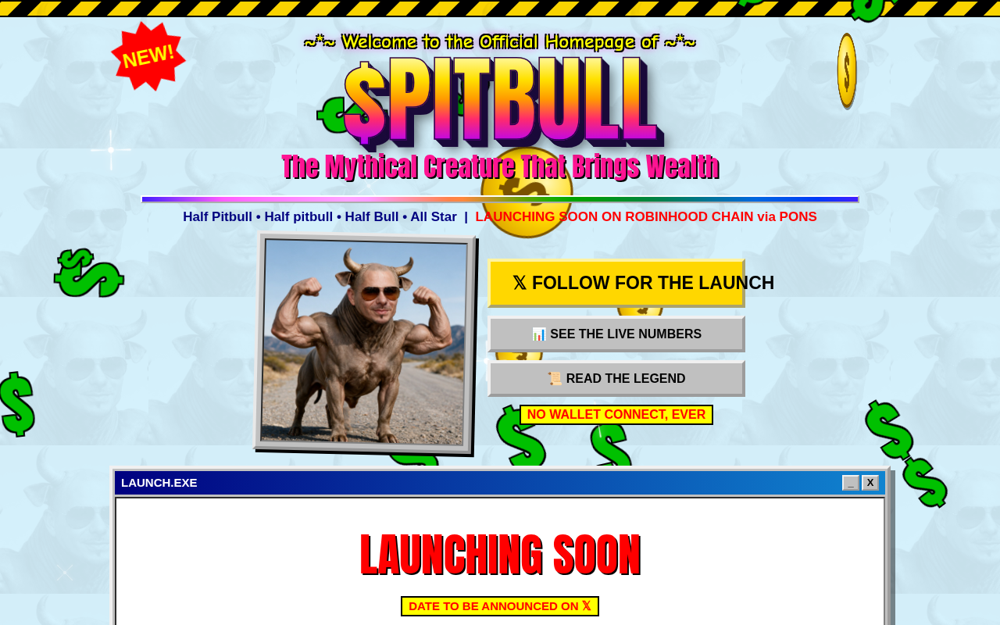

THE SHRINE IS OPEN
THE SHRINE IS OPEN
LIVE ON-CHAIN NUMBERS * 7 SIGNS * NO WALLET CONNECT, EVER
NETSCAPE - [$PITBULL - the mythical creature that brings wealth]
_
[]
X
Location:

my homepage is finished, mi gente.
go look at it.
thepitbull.fun
NEW!